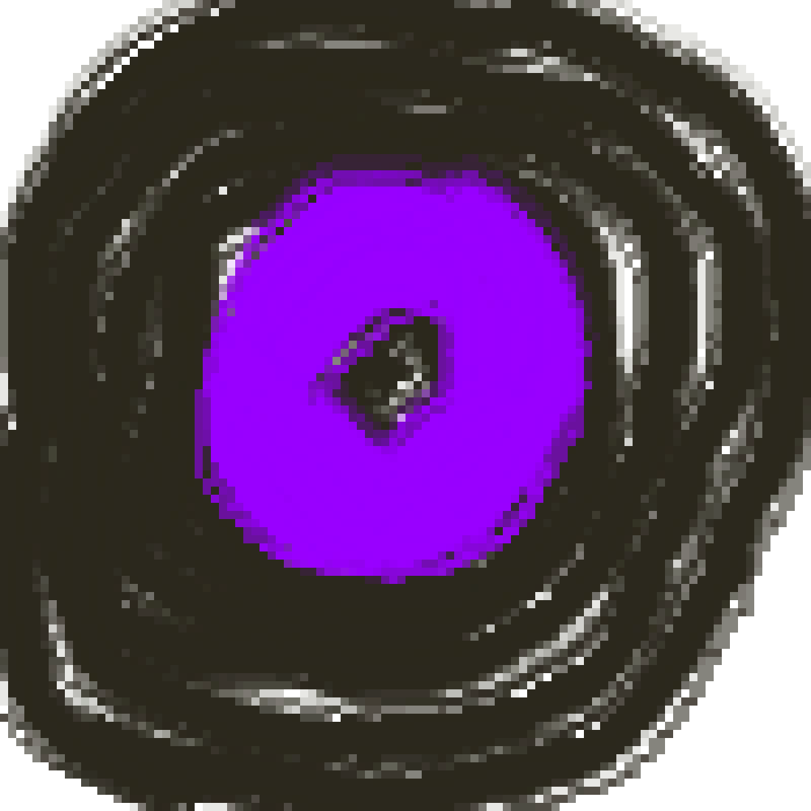
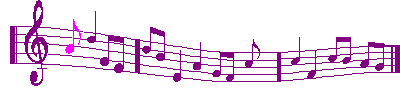

Breakfast In America - Supertramp Monochrome Last.fm
Because - The Beatles Monochrome Last.fm
Nowhere Man - The Beatles Monochrome Last.fm
Black Hole Sun - Soundgarden Monochrome Last.fm
Space Oddity - David Bowie Monochrome Last.fm
The Adventures of Rain Dance Maggie - Red Hot Chili Peppers Monochrome Last.fm
Poster Child - Red Hot Chili Peppers Monochrome Last.fm
The Beatles Monochrome
The Racontuers Monochrome
Collective Soul Monochrome
Queen Monochrome
David Bowie Monochrome
Red Hot Chili Peppers Monochrome
Supertramp Monochrome
Billy Joel Monochrome
The Offspring Monochrome
Chumbawamba Monochrome
Weezer Monochrome
Green Day Monchrome
Guns N' Roses Monochrome
George Harrison Monochrome
Elton John Monochrome
Talking Heads Monochrome
Traveling Wilburys Monochrome
Smash Mouth Monochrome
The B52's Monochrome
The Coasters Monochrome
Sublime Monochrome
Paul Simon Monochrome
The Lost Fingers Monochrome
"Weird Al" Yankovic Monochrome
They Might Be Giants Monochrome
R.E.M. Monochrome
Fastball Monochrome
ABBA Monochrome
Ren Monochrome
Citizen Fish Monochrome
Subhumans Monochrome
The Happy Fits Monochrome